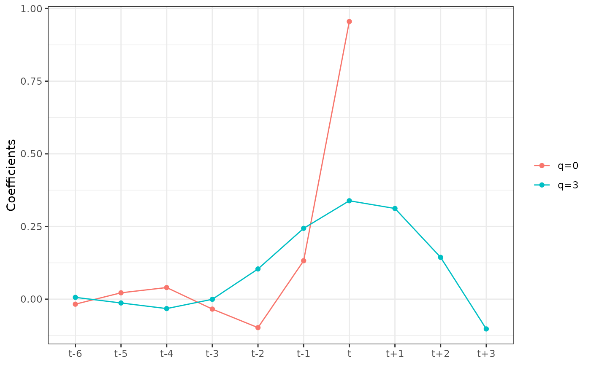
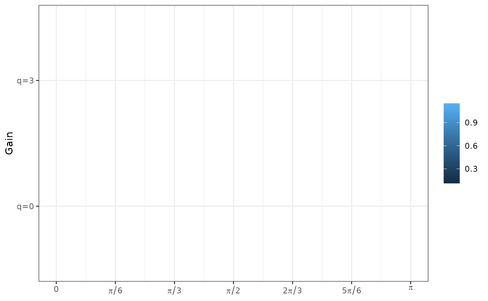
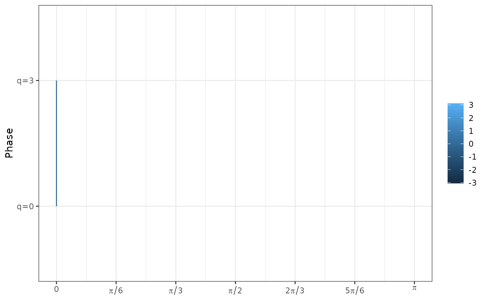

Set of ggplot2 plotting functions for filters and moving averages generated by the rjd3filters package.
Usage
ggplot_coef(x, zero_as_na = TRUE, ylab = "Coefficients", ...)
# S3 method for class 'finite_filters'
ggplot_coef(x, zero_as_na = TRUE, ylab = "Coefficients", q = 0, ...)
# S3 method for class 'moving_average'
ggplot_coef(x, zero_as_na = TRUE, ylab = "Coefficients", ...)
ggplot_gain(x, nxlab = 7, xlim = c(0, pi), ..., n = 101)
# S3 method for class 'finite_filters'
ggplot_gain(x, nxlab = 7, xlim = c(0, pi), q = 0, ..., n = 101)
# S3 method for class 'moving_average'
ggplot_gain(x, nxlab = 7, xlim = c(0, pi), ..., n = 101)
ggplot_phase(x, nxlab = 7, xlim = c(0, pi), normalized = FALSE, ..., n = 101)
# S3 method for class 'finite_filters'
ggplot_phase(
x,
nxlab = 7,
xlim = c(0, pi),
normalized = FALSE,
q = 0,
...,
n = 101
)
# S3 method for class 'moving_average'
ggplot_phase(x, nxlab = 7, xlim = c(0, pi), normalized = FALSE, ..., n = 101)Arguments
- x
coefficients, gain or phase.
- zero_as_na
boolean indicating if the trailing zero of the coefficients should be plotted (
FALSE) or removed (TRUE).- ylab
A character string specifying the y-axis label.
- ...
other arguments to
matplot.- q
q.
- nxlab
number of xlab.
- xlim
vector containing x limits.
- n
number of points used to plot the functions.
- normalized
boolean indicatif if the phase function is normalized by the frequency.
Examples
filter <- rjd3filters::lp_filter(6, endpoints = "DAF", kernel = "Henderson")
ggplot_coef(filter, q = c(0,3))

ggplot_gain(filter, q = c(0,3))
#> `geom_line()`: Each group consists of only one observation.
#> ℹ Do you need to adjust the group aesthetic?

ggplot_phase(filter, q = c(0,3))
